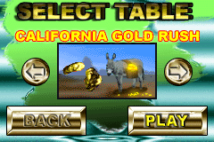

Pinball Tycoon (USA)
Battery Save Save Format Mapped (Family Spec) gbakit Built-In VRAM Tile Sheet
Cartridge Identity
- Game Code
A2TE(FamilyA2T)- Header Title
PINBALL TYCN- Maker / Revision
7M/ rev0- ROM Size
- 4.0 MiB (4,194,304 B)
- Save Media
None / Unknown- SHA-256
8703d37ccf8980ab08ba017e4cbd1216f659253330c7acdfcebbebe45b7e296e- Engine / SDK Group
comm-041(4 families)
Screenshots

Battery Save Format Specification (Family Shared)
This release shares its save architecture with canonical family reference Super Robot Taisen - Original Generation 2 (USA) (Family
A2T).
Open Family Save Format Spec (A2TE)Download save-format.json
- Canonical Specification
A2TE· 5 mapped fields · 1 verified checksum(s) · Confidence: HIGH- gbakit Built-In Support
- Built-in (A2TE)
gbakit save verify A2TE save.sav
gbakit save decode A2TE save.sav
gbakit save fix A2TE damaged.sav -o repaired.savROM Assets, Compression & Audio
- BIOS Compression
- LZ77 (
0x10): 0 streams · RLE (0x30): 0 streams - ROM Pointer Tables
- 1 tables (0 pointing to validated compressed streams)
- SDK Backup Tags
- None
- VRAM / Palette Snapshot
- 1,968 non-zero 8×8 tiles · 32 palettes · Direct ROM matches: 0 VRAM blocks, 0 palette blocks

Text, Fonts & Scene Data
- Primary Text Encoding
- 16-bit / UTF-16LE text (
18ASCII strings ·1Shift-JIS runs) - Font & VWF Indicators
- VWF Width Table 1bpp Font · BIOS SWIs: BitUnPack
0x10:25· LZ770x11/12:5· Huffman0x13:1· RLE0x14/15:3 - Scene & Packaging
3ROM pointer tables (≥32 entries,0≥200) ·0relativeu32TOCs ·108OAM metasprite hits
Regional Variants & Revisions (Family A2T)
- Pinball Tycoon (Europe) (
A2TP, 4 MiB)